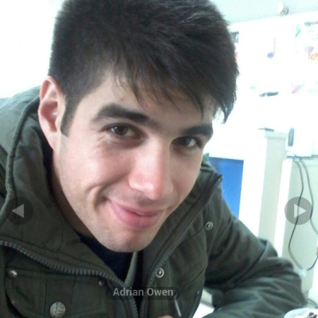

Alvaro Mesa
Lo que quiero aprender este año:
La lista no esta en orden, son herramientas que deseo aprender para poder poner en practica
- HTML,CSS y Javascript Basico.
- Tratar de aprender lo suficiente de lado cliente para poder trabajar en paginas web que puedan ser me de utilidad a mi y a otros programadores. Esto lo logre.
- Diseño Responsivo.
- Luego de obtener experiencia en el funcionamiento de la web, aprender a diseñar paginas que funcionen en cualquier dispositivo.Esto lo logre.
- Angular 2 o React.
- Aprender un Framework de Javascript que me permita insertarme en un equipo de desarrollo web.Decidiendome entre Angular y màs opciones de trabajo o React que en mi opinion tiene màs ventajas.
- PHP y SQL.
- Aprender los lenguajes de programación del lado del Servidor para ya poder crear mis propios Sitios para clientes. Esto lo logre
- Laravel y MySql.
- Aprender un framework de PHP y MySQL para crear bases de datos para proyectos de mayor tamaño.Comenzando a aprender Laravel.
Lo que Debo aprender este año:
- Terminal / Command Line. ×
- GIT / Version Control. ×
- CSS / Bootstrap Framework. ×
- JavaScript/ jQuery Library.×
- PHP SQL/MySql .×
2017
Luego de completar la Carrera de Técnico en Soporte Informático en la Universidad ORT, decidi que era hora de comenzar la carrera que más me interesaba para desarrollarme profesionamente, ser un Programador.
Me inscribi en la Carrera de Analista en Técnologias de la Información.
Enero:
- Comenze en la aplicación Sololearn, aprendi los fundamentos de diversos lenguajes, HTML5,CSS,Javascript/jQuery/PHP y SQL.
- Me registre en Code Academy y comenze a realizar los cursos de HTML y CSS, completando ambos disponibles al 100%.
- Me registre en FreeCode Camp, el cual seria un Bootcamp online que te ofrece certificarte como Full Stack Developer gratis con más de 2000hs de practicas y un proyecto final trabajando para una ONG.
- Comenze en BIOS curso de Programador PHP y MySQL.
Febrero
- Trabajando en terminar cursos de CodeAcademy.
- Termine HTML&CSS,Make a Web, Learn the Command Line y PHP.
- Trabajando en el curso de Javascript.
- Estudiando Cursos de Udemy:Programming 101.
- Comenze a trabajar en el sitio Front End Padawans, orientado a plasmar lo aprendido, publicar guias que sean de utilidad.
- Comenze a estudiar en el Proyecto Odin, el cual es similar a freecodecamp, ofreciendo una curricula de front end developer gratuito.
- Actualize el 21 de Febrero la landing page y mi blog, para dejar un poco registrado lo hecho.
- Termine todas las lecciones de DASH.
- Termine los Algoritmos Basicos de Front End Developer FCC.
- Termine Programming 101, comenze en How to Master SEO.
- Complete How to Publish a Website in Codecademy
Marzo
- Termine marksheet.io, mejore mis conocimientos de HTML/CSS y aprendi sobre SASS
- Comenze jQuery en Codecademy.
- Comenze un Nuevo trabajo de 5hs como técnico de Soporte.
- Termine todos los Examenes de Soporte Técnico de la ORT, queda recibirme ya solicite el diploma.
- Actualize el blog.
- Termine jQuery en CodeCademy.
- Termine con GIT en CodeCademy.
- Termine con SQL en CodeCademy.
- Aprendi a trabajar con ficheros con PHP.
- Comenze con React en CodeCademy.
- Aprendi a trabajar con bases de datos con MySQL.
- Aprendi a conectar PHP con bases de datos.
- Me uni a mi primer cohort-wombats de Free Code Camp.
- Comenze con jQuery en Code Shool.
- Comenze con Software Tester en Aprende.org.
- Complete HTTP Fundamentals en Pluralsight.
Abril
- Termine jQuery en Code School.
- Aprendí a trabajar con sesiones en PHP.
- Comenze a trabajar en el Projecto de PHP y MySQL para BIOS.
- Comenze en pluralsight con Front End Development Career Kickstart.
- Comenze a practicar localmente con jQuery y Bootstrap 3.
- Termine los videos de FreeCodeCamp.
- Termine de leer el libro Javascript Begginner from Mark Lassoff.
- Termine con Articulos de CodeAcademy.
- Trabajando en completar los cursos Code Academy Pro.
- Termine en Pluralsight curso Front End Developer Kickstart.
- Termine en Pluralsight curso Front End Developer HTML,CSS,Javascript and jQuery.
- Continuo estudiando material de Javascript en W3schools.
- Continuo estudiando material de PHP5 en W3schools.
- Continuo con Duolingo, busco alcanzar un 80%
- Continuo con Projecto Odin.
- Trabajando en Proyecto de PHP y MySQL.
- Trabajando en Proyecto Portfolio con jQuery y Bootrap 3.
- Realizando tests de Code Academy Pro Full Stack Path de los cursos dados.
- Realizando Projectos de jQUERY en Code Academy Pro.
- Comenze con CS50:Introduction to Computer Science en edX de Harvard University .
- Comenze con los Algoritmos Intermedios de FCC.
- Comenze con la Weather APP en FCC.
- Organize un plan de estudio para seguir de Abril a Junio.Trabajando con FCC,Code Academy, Odin Project, CS50, Ingles, el objetivo es enfocarme en terminar y organizar los cursos en lo que me anoto.
- Trabajar en un repositor de vinculos de recursos y un todo list para no perder cursos que me encuentro.
- Comenze Code Academy Pro Full Stack Path.(Javascript,jQuery,Angular and Ruby).
- Proximas Pruebas que debo realizar:
- Programación I (javascript):
- 1er Parcial 8 de Junio
- 2do Parcial 11 de Julio
- Entrega Obligatorio 28 de Junio.
- Ingles:
- May 25th
Mayo
- Termine Algoritmos Intermedios de FreeCodeCamp.
- Termine Introduccion al Desarrollo Web 1 y 2 de Activate
- Complete el 100% curso Javascript en Code Academy Pro.
- Ganando practica con jQuery y Bootstrap.
- Trabajando en terminar el Portfolio.
- Termine de leer Positioning in CSS de Eric A Meyer .
- Introduccion a Javascript de Javier Eguiluz Perez.
- Complete material de referencia javascript en W3Schools.
- Termine mi Portfolio
- Continuo con los cursos de google Activate y comenze a estudiar para Analista Junior Genexus.
- Termine hasta el practico 6, recibi letra de obligatorio de Programación 1, realice test de ingles advanced.
- Dado que no me dio el tiempo este mes para completar más actividades, reformule el plan, a un plan mensual. Fines de Mayo y Junio va a ser orientado :
- Terminar Cursos de Google Activate: Marketing Digital, Analítica Web, Comercio Electrónico,Cloud Computing y Productividad Personal
- Estudiar y realizar prueba de Analista Junior Genexus
Junio
- Comenze a estudiar para examen de Analista Junior Genexus..
- Termine Curso básico de Marketing Digital y Productividad Personal en la Era Digital en Activate
- Aprendiendo Typescript.
- Leyendo sobre OOP en javascript.
- Practicando con jQuery y Bootstrap.
- Termine el Practico 7 de Programación 1.
- Trabajando en una guia sobre SEO.
- Leyendo Software Testing.
- Trabajando en el Obligatorio de Programación 1.
- Termine mi CV.
- Termine con el obligatorio de Programacion 1.
Julio
- Comenze con un registro diario de lo que estudio y donde continuar.
- Pase todos mis recursos a boostnotes, trabajando en un markdown en github para compartir los recursos.
- Aprendi fundamentos Typescript en codemurai.
- Aprendi fundamentos de node.js en codemurai.
- Aprendi fundamentos de mongoDB en codemurai.
- Aprendiendo Javascript ES6 en codemurai.
- Termine con fundamentos de C# en sololearn.
- Comenze a leer javascript Allonge, no lo recomiendo para principiantes, trae muchos conceptos avanzados de programación funcional, solo el primer capitulo pude seguir.
- Volvi a seguir leyendo el libro You Dont Know Javascript, el libro 4 This & Objects, voy por el capitulo 5 Prototypes.
- Termine con la app Encode, pude comprender mejor el uso de .map, .reduce, .filter y ademas el uso de apply y call.
- Termine la guia de javascript de tutorialspoint, no la recomiendo trae muchos errores ya en el codigo mismo.
- Realize try ruby de codeschool, prefiero quedarme con node por el momento, aunque fue un excelente tutorial.
- Continuo leyendo pdfs de StackOverflow documentation, Mozilla Developer Network, Medium, codeburst y internetishard.
- Me subscribi por un año a code school.
- Aprendi sobre creational pattern design desde stackoverflow documentation. Factory pattern y Prototype pattern
- Curso de HTML&CSS Foundations y Formation en Code School.
- Curso de Javascript y buenas practicas de javascript en Code School.
Proyectos
Listado de Proyectos que actualmente trabajo:
- Mejorando el blog.
- El objetivo es trabajar en mantener un Blog propio donde dejo apuntes de lo que estoy aprendiendo guias, recursos y tutoriales.
- Actualizar Portfolio
- Centralizar todo lo trabajado, codigos, scripts, trabajos en repositorios y una pagina para presentar .
- Proyecto TomateDo
- El objetivo es aplicar la practica de Javascript en crear un Pomodoro y una lista TODO en un proyecto que pueda utilizar para mejorar la productividad.
- Proyecto Quizzly
- El objetivo es aplicar la practica de Javascript en crear un pequeño juego de preguntas y respuestas sobre programaciòn.Este esta en su primera fase.
- Buscar un grupo de trabajo.
- La idea que tengo en mente es buscar otros programadores que recien comienzen como yo, para trabajar en proyectos practicos, simples que me den experiencia y pueda presentar en el portfolio.